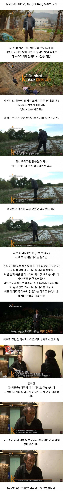

도둑새끼들 때문에 먼 봉변임 이게

도둑새끼들 때문에 먼 봉변임 이게
씨발 지금 생각해도 빡치네. 내가 그때 꽁초 버리지 말아주세요라고 팻말도 만들었는데, 거기다 지지고 끄더라. 개씨발년들
ㅋㅋㅋ 중간에 드리프트뭐야 ㅋㅋㅋㅋㅋㅋㅋ
왜 함정을 설치안했어?
내가 대한민국의 직쏘가 되었어야했는데 말이다 ㅇㅇ
이게 왜 자꾸 논란이되냐면 판결이 황밸이라그럼
저렇게 전기 울타리 치는게 괜찮다는 애들은
기숙사에서 누가 내 음료수 마시니깐 독약 탄다는 것도 괜찮다는거임?
우리 사이다패스 개붕이 머법관님들은 냉철하고 냉정하신다.
그건해도되는거 아니였냐
사람이죽을수있으닌깐 흙탕물정도로 타협하자
애새끼 간수 잘 했어야지 ㅋ
애새끼도 아님 30대면 걍 어른이 잘 못한거지
애비는 전기울타리 설치는 불법만외치네ㅋ 지아들 도둑질은 합법임?
참 안타깝네 농부던 유가족이던
밭주인 과실치사는 그렇다치는데 민사배상은 좀 아닌듯
고라니 죽었다고 고라니 가족한테 배상해주나?
정당한판결
1. 안전표지판 해도 도둑놈음 도둑질함. 애초 윤리의식 박살난새끼임. 현장 잡혀도 안보였다 없었다 이럴거임.
2. 표지판 세우는건 조상이내줌? 밭이나 논 큰필지는 둘레가 몇키로도 넘어감. 둘레 2키로 간격 20미터당 표지판 느그부모가 내줄거임? 안본인다면 표지판에 야광이랑 전방gp처럼 조명까지해주리?
3. 애초 사람서리 방지가아니라 들짐승 피해 막으려고 설치한거임. 깡촌에 사람이 있을것도 아니고 죽으라고 설치한의도도 아닌 무지에서비롯된 미필적 고의임.
4. 고로 두명 도둑놈 목숨값 30퍼센트 16년전 물가로로 8천만원이면 합당함. 2010년경 대졸초봉 2-3천따리가 4-5년정도 순연봉 1.2억정도면 도둑놈 즈그 목숨값정도 맞음. 참고로 2010년 서울아파트 평균값이 4억이고 지금은 12억임.
왈가왈부할것도 아님. 전기울타리는 본인이 설치해서 무지해서 본인이 죽는경우도 있는데 저건 밤에 도둑질이라는 의지도 계획적으로 범법저지르다 죽은거잖어. 애초 판사는 사람이 죽얶으니 최소한 목숨 앗아간 죄값의 명분으로 표지판을 얘기한거지 그게 서리를 막고 사람이 안죽었을거라고 판단한게 아님. 판결 기가막히게 한거임
판결 자체는 잘 한거 같은데
할아버지가 잘못하신 부분은 있는데
도둑쪽은 뭐가 그렇게 자랑스럽다고 저렇게 당당하게;
예전엔 체면이 있어서 뭔가 잘못하다 죽으면 창피한 줄 알고 조용히나 있었지 요즘은 체면도 없고 창피한 것도 없어서 그냥 생떼를 쓰는 시대가 됐다.
납득이되는 판결이네
판결이 납득되는 수준인데
마트에서 물건 훔친 사람보고
사형판결 안내리잖아
그런 좀도둑이 진심으로
죽길 바라는 사람도 없고
판결 잘 한거같은데
이건 진짜 판사가 깔끔하게 잘한거같은데? 농부과실이 0이면 농부들은 전부 허가없이 전기끌어다가 불법전기망 설치하고 그러다 서리가 아니라 자신 또는 이웃의 실수로도 사고가 날수있으니깐. 불법시설물에 대한 경고도 적당히 준거라고 봄
불법 설치한 전기철조망에 두명 죽었는데 8000이면 상당히 싸게 막았다고 본다 농작물 서리가 사형감은 아니잖아
도둑질이 죽을죄냐? 라고 물어보면 그거까진 아니라고 대답할텐데
막상 죽은 거 보면 속이 시원하긴 하네
미국이었으면 산탄총에 벌집이 돼서 죽었어도 찍소리도 못했을텐데ㅋㅋ
맞는판결
도둑떠나서 실수로 들어가거나 할수도 있는건데 주의 안내판 없는건 과실 맞음 물론 도둑놈들이라는건 실수가 아니라 명백한 사실이지만
의외로 사고 났을 때 경고문구 유무 차이가 법정 판결에서 역전 될 만큼 크더라
암만 그래도 죽을 죄는 아니긴 하지
무단침입범 서리범들을 명쾌하게 벌줄 다른 대안이 있냐? 하면 없지 그건 답답하지
근데 그렇다고 이걸 농부에게 죄를 안 물으면 앞으로도 사유지에 위험한거 설치해놓고 사고나면 들어온놈 잘못이라고 할 수 있는거 아니겠음
조금 케이스가 다르지만 정당방위로 살해한 사건 생각나네 빨래건조대로 집 침입한 도둑 때려죽였던 사건
도둑질이 뭔 자랑이라고 → 그럼 죽어는 좀 과한 처사긴하지.. 그냥 안타까운 사고 인 듯
배추 따먹은새끼들이 원초적으로 잘못한거지 ㅋㅋㅋ
도둑놈새끼들 안전까지 생각해줘야되는구나
내가 이런글 쓰면 무슨 인권쟁이 범죄자 흑흑하는 병신으로 보는 경우가 있는데,
옛날에 어머니가 화단 가꾸시는데, 담배피고 꽁초 화분에 버리거나, 심지어 가져가는 (동네 아지매로 추정) 개새끼들이 많았음
우리 사유재산에 피해를 끼치고 어머니 속상하게 하는 개새끼들이었지.
근데, 내가 그 새끼들 죽일 정도의 위력인 함정을 파놓는게 정당할까?
음... 정당하겠지? 설치했어야했네.